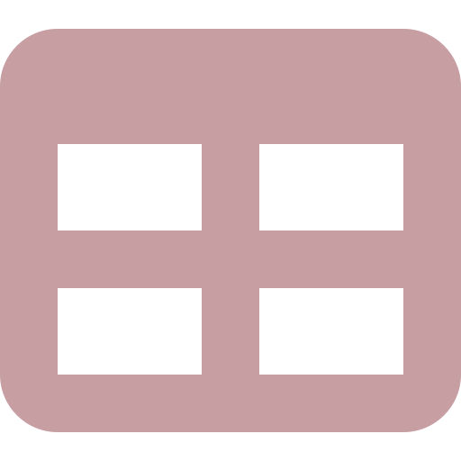
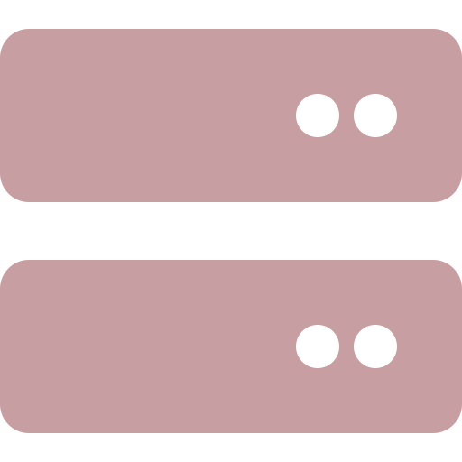
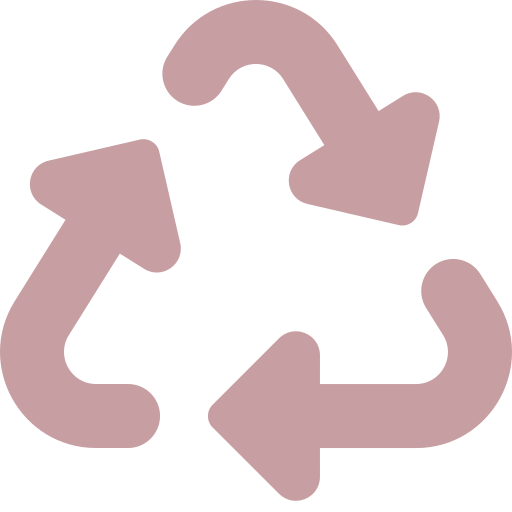

Function reference
Open Government Data
Get resources from the open govenment data portal from Statistics Austria. See the OGD Article for a hands-on documentation.
-
od_cache_summary()od_downloads() - Cache management for Open Data
-
od_catalogue() - Get a catalogue for OGD datasets
-
od_list() - List available Opendata datasets
-

od_cache_dir()od_cache_clear()od_cache_file()od_resource()od_json()od_resource_all() - Resource management for open.data
-
od_revisions() - Get OGD revisions
-

od_table() - Create a table-instance from an open-data dataset
-
od_table_save()od_table_local() - Saves/load opendata datasets via tar archives
-
sc_recoder - Recode sc_table objects
STATcube REST API
Get resources from the REAST API of STATcube. See the API key article for instructions about the API Key and the json requests article for a hands-on documentation.
-

sc_table()sc_examples_list()sc_example()sc_table_saved_list()sc_table_saved() - Create a request against the /table endpoint
-
sc_key()sc_key_set()sc_key_get()sc_key_prompt()sc_key_exists()sc_key_valid() - Manage your API Keys
-
sc_schema()print(<sc_schema>)sc_schema_flatten()sc_schema_catalogue()sc_schema_db() - Create a request against the /schema endpoint
-
sc_info()sc_rate_limit_table()sc_rate_limit_schema()sc_rate_limits() - Other endpoints of the STATcube REST API
-
sc_table_custom() - Create custom tables
General
Other functionalities including the STATcubeR data class.
-

sc_data - Common interface for STATcubeR datasets
-
sc_browse()sc_browse_preferences()sc_browse_table()sc_browse_database()sc_browse_catalogue()sc_browse_ogd() - Links to important STATcube and OGD pages
-

sc_tabulate() - Turn sc_data objects into tidy data frames
-

sc_json_get_server() - Get the server from a json request
-
sc_last_error()sc_last_error_parsed() - Error handling for the STATcube REST API
-

sc_cache_enable()sc_cache_disable()sc_cache_enabled()sc_cache_dir()sc_cache_files()sc_cache_clear() - Cache responses from the STATcube REST API